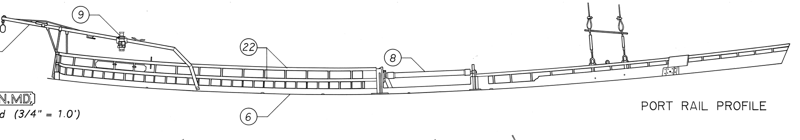

Package indexS04-V03 Port rail profile
Original scan pixels: [2462, 552, 10754, 2007]; source SHA-256: 26613443160fe74ec23712f68d934a4e5e39086e7aed33f81e43dee582ec8fd4.
Native lossless view · Raw OCR ·
Word coordinates/confidence · Manifest

Checked construction records
Raw OCR — requires review
a | || LC
| | |
\|,. MD,
PORT RAIL PROFILE
d (3/4" = 1.0’) (6)
\
Original-resolution tiles and native bounds
- tile-00-00.png [2462, 552, 4062, 2007]
- tile-00-01.png [3934, 552, 5534, 2007]
- tile-00-02.png [5406, 552, 7006, 2007]
- tile-00-03.png [6878, 552, 8478, 2007]
- tile-00-04.png [8350, 552, 9950, 2007]
- tile-00-05.png [9822, 552, 10754, 2007]